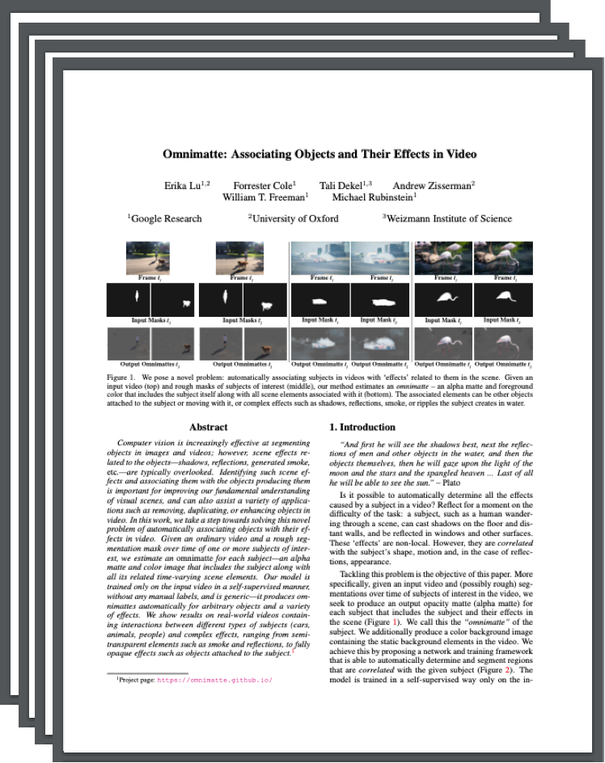
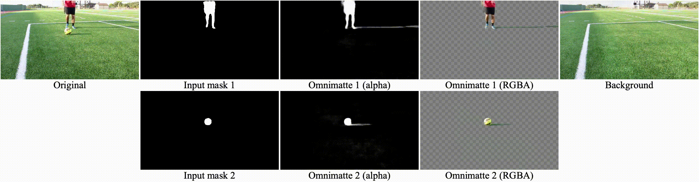
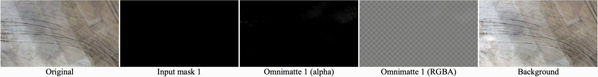
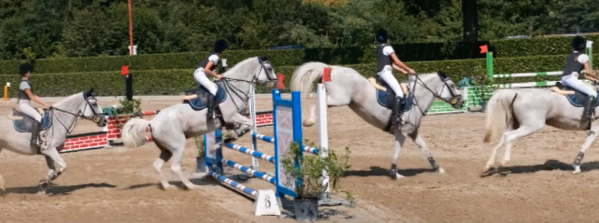
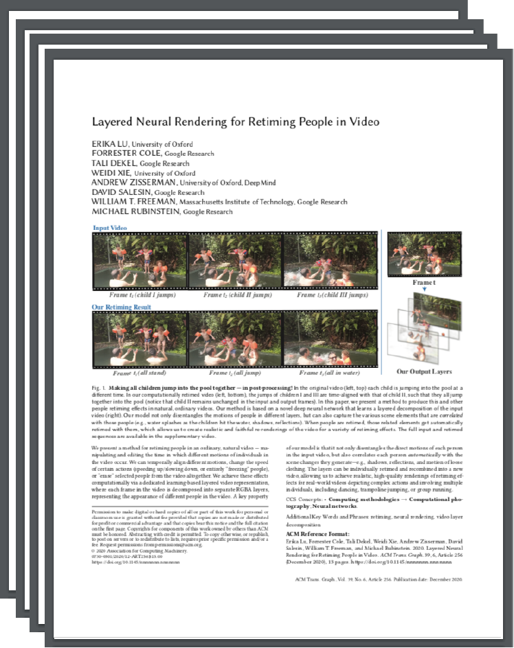

Omnimatte: Associating Objects and Their Effects in Video
| 1 Google Research | 2 VGG, University of Oxford | 3 Weizmann Institute of Science |
| | Paper | Video | Code | Blog | |
 |
We pose a novel problem: automatically associating subjects in videos with ‘effects’ related to them in the scene. Given an input video (top) and rough masks of subjects of interest (middle), our method estimates an omnimatte – an alpha matte and foreground color that includes the subject itself along with all scene elements associated with it (bottom). The associated elements can be other objects attached to the subject or moving with it, or complex effects such as shadows, reflections, smoke, or ripples the subject creates in water. |
Abstract
Computer vision is increasingly effective at segmenting objects in images and videos; however, scene effects related to the objects—shadows, reflections, generated smoke, etc—are typically overlooked. Identifying such scene effects and associating them with the objects producing them is important for improving our fundamental understanding of visual scenes, and can also assist a variety of applications such as removing, duplicating, or enhancing objects in video. In this work, we take a step towards solving this novel problem of automatically associating objects with their effects in video. Given an ordinary video and a rough segmentation mask over time of one or more subjects of interest, we estimate an omnimatte for each subject—an alpha matte and color image that includes the subject along with all its related time-varying scene elements. Our model is trained only on the input video in a self-supervised manner, without any manual labels, and is generic—it produces omnimattes automatically for arbitrary objects and a variety of effects. We show results on real-world videos containing interactions between different types of subjects (cars, animals, people) and complex effects, ranging from semi-transparent elements such as smoke and reflections, to fully opaque effects such as objects attached to the subject.
Paper
|  | Omnimatte: Associating Objects and Their Effects in Video |
Results
 |
|||
 |
|||
 |
|||
|  | |||
|  | |||
Example of adding a text layer: |
|||
Supplementary Material
|  |
Code
|
[code] |
External Coverage
|  | Layered Neural Rendering for Retiming People in Video |
Acknowledgements. This work was supported in part by an Oxford-Google DeepMind Graduate Scholarship and a Royal Society Research Professorship. We thank Weidi Xie for assisting with object removal baselines.